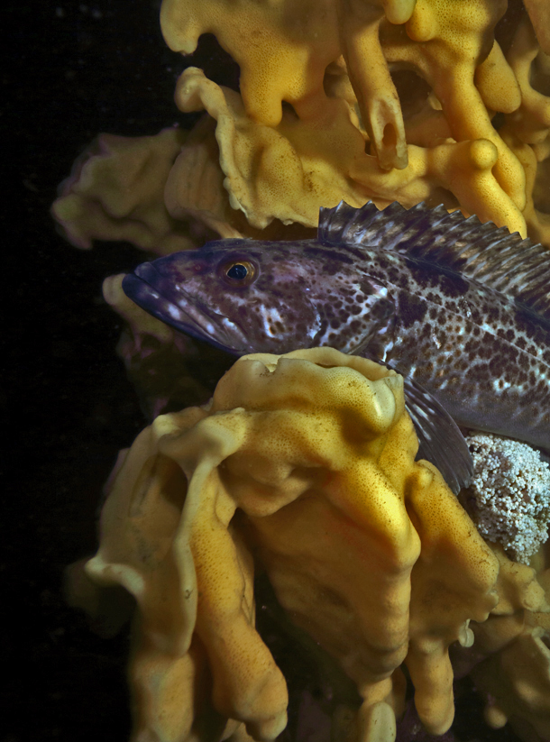
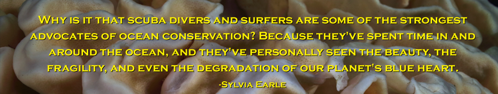

About Emerald Diving
About Emerald Diving
Emerald Diving
Explore the coastal and inland waters of
Washington and BC
Explore the coastal and inland waters of
Washington and BC



Welcome to Emerald Diving!
The Emerald Diving website is dedicated to the exploration, education, and preservation of the cold marine waters in Washington and British Columbia ranging from Cape Flattery on the Washington coast, to the southern reaches of Puget Sound, to the north end of Vancouver Island. These emerald green, nutrient rich waters support an amazing amount of robust and diverse life, including fish, marine mammals, marine birds, algae, seaweeds, marine grasses, and seemingly countless invertebrate species. From the largest octopus and anemones to the fastest seastars on the planet, the inland and coastal current-intensive waters in and around the Salish Sea provide a basis for a truly unique ecosystem.
The continuing population explosion in northwest Washington and western BC have put an immense amount of pressure on our local marine ecosystem – habitat destruction, overharvesting, and pollution being the biggest culprits. In just the last 20 years, I have witnessed the depletion of rockfish, herring, and Pacific cod stocks, as well as the retreat and even obliteration of local eelgrass beds.
As humans, we tend to only appreciate and protect what we experience and understand. The primary objective of Emerald Diving is to enhance your knowledge and experience of our local marine life, regardless if you are a new beachcomber, a seasoned scuba diver, or an aspiring marine naturalist such as myself.
This site is the conglomeration my scuba diving experiences and underwater photography efforts from the last 20 years. Maintaining the site is simply a labor of love, and my meager way of attempting to give back to the waters that have given me so much over my entire life.

Emerald Diving is not a business; you will not find any ads or products/services for sale anywhere on this site. In the event that you wish to use any of this imagery for non-profit or commercial purposes, please contact me. I offer discounted pricing to non-profit and educational organizations.
Please enjoy, cherish, and appreciate the marine life this website represents. The fate of our waters is not yet determined; each one of us can make a difference.
- Keith Clements
Please enjoy, cherish, and appreciate the marine life this website represents. The fate of our waters is not yet determined; each one of us can make a difference.
- Keith Clements